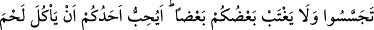
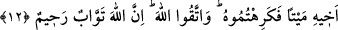

ve kendisinden sonra küfür olmayan yakîn dilerim.” Bunu böyle bil.
12. Ey iman edenler! Zannın çoğundan kaçının. Çünkü zannın bir kısmı günahtır.
Birbirinizin kusurunu araştırmayın. Biriniz diğerinizi arkasından çekiştirmesin.
Biriniz, ölmüş kardeşinin etini yemekten hoşlanır mı? İşte bundan tiksindiniz. O
halde Allah’tan korkun. Şüphesiz Allah, tevbeyi çok kabul edendir, çok
esirgeyicidir.
“Ey iman edenler! Zannın çoğundan kaçınınız” Yani ondan beri durun ve uzak olun.
“Zan” bir emare dolayısıyla ortaya çıkan şeyin ismidir. Eğer emare kuvvetlenirse
“ilim”; çok zayıflarsa “tevehhüm” olur. “Zannın çoğundan” ifâdesindeki “çoğu”
kelimesi ihtiyatlı davranmak gerektiğini belirtmek ve her zanda bir zan olduğunu
düşünmek içindir; ta ki hangi kabilden zan olduğu bilinsin. Kaçınılması emir olunan
zannın bazısıdır. Ancak şu kadarı var ki, zannın hadd-i zatında çok olduğunu belirtmek
için kaçınmayı çoklukla ilişkilendirdi. Bu durumda bizim çok olan zannın mârifeliği ve
nekreliği arasındaki farkı bilmemiz gerekir.
Eğer zann mârife kılınırsa muhatabın bildiği şeye işaret edilmiş olur ki, bu da az olan
değil, çok olan zandır. “Nekre” kılınırsa zannın bazı ferdleri, yani bir kısmı kasdolunur
ki bu durumda kaçınılması emrolunan, hangisi olduğu belli olmadan zannın fertlerinden
‘çokluk’la sıfatlanmış herhangi bir zan olur. Mükellefiyetin bu şekilde oluşunda büyük
bir fayda vardır. O da mükellefin bu hususta ihtiyatlı davranıp herhangi bir zanna -ittibaı
sahih olup kaçınılması gerekmeyen türden olduğunu anlayana dek- cüret edememesidir.
Mârife olsaydı mânâ şöyle olacaktı: Çoklukla sıfatlanmış zannın hakikatinden ya da
azından değil de bütün fertlerinden kaçının. Cins ve istiğrak mânâsıyla mârife olan
zannın haram kılınması, haram kılınan şey belirli olduğu için mükellefi ihtiyata sevk
etmez. Ondan kaçınır ama başkasından kaçınmaz. Yani sû-i zan olsun sâdık zan olsun az
olan zandan kaçınmamış olur. Bu mânânın kasd olunmadığı mâlûmdur. Bunun aksine
çoklukla sıfatlanmış zan nekre kılındığında haram kılınan şey bu hakikatin ferdlerinden
mübhem bir ferde ittiba etmektir. (Yani her nasıl olursa olsun bir zanna tâbi olmaktır.)
Bu şekilde bir haram kılma, mükellefi ihtiyata sevk etmekte ve aklına gelen zannın hangi
tür bir zan olduğunu düşünmesine vesile olmaktadır. Zaten zannın bâzısına tâbi olmak
icab eder. Bunun bir misali Allah hakkında hüsn-i zan beslemektir. Hadiste buyrulur:
“Hüsn-i zan îmandandır.”[195]
Amelî meselelerde; hakkında kesin delil olmayan “vitir” gibi şeylerle alâkalı zan da